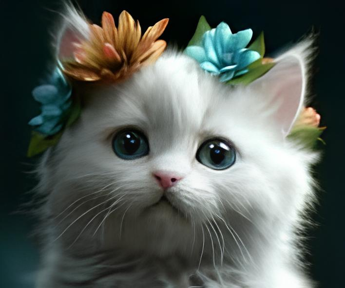

Sobre Seu Pet
DATA: 1 Aninho
CATEGORIA: Gato
Este gatinho branco de 1 ano é uma bolinha de neve de pelo macio e sedoso. Seus olhos grandes e curiosos refletem sua personalidade brincalhona e afetuosa. Ele traz alegria e tranquilidade por onde passa.